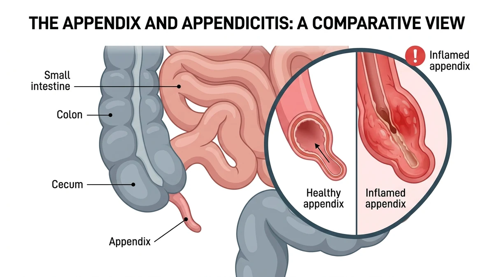
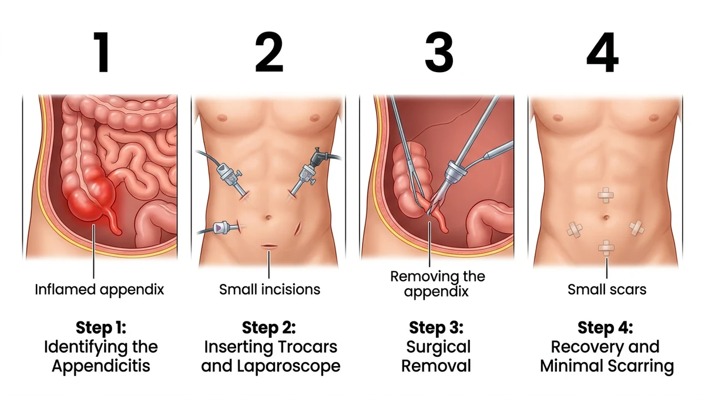

آپاندکتومی یکی از رایجترین جراحیهای اورژانسی شکم است و در بیشتر موارد با روش لاپاروسکوپی و چند برش کوچک انجام میشود؛ هدف آن برداشتن آپاندیس ملتهب پیش از پارگی و پخش عفونت در شکم است. در این مقاله آمادگی لازم، مراحل عمل، مراقبتهای بعدی و عوارض احتمالی را مرحلهبهمرحله میخوانید.
سالها در اتاق عمل، پیش از آپاندکتومی بارها این جمله را از بیمار شنیدهام: «فکر میکردم فقط یک دلپیچه است.» و همیشه یک جواب کوتاه داشتهام: وقتی آپاندیس ملتهب میشود، با استراحت و مسکن درست نمیشود و باید خارج شود. این متن را نوشتهام تا بدانید آپاندیسیت چیست، چرا جراحی اورژانسی حساب میشود، در اتاق عمل دقیقاً چه مراحلی انجام میشود و بعد از عمل چه انتظاری داشته باشید. قرار نیست چیزی را بزرگنمایی یا پنهان کنم؛ فقط مسیر را روشن میکنم تا با ترس کمتری تصمیم بگیرید.
آپاندیس یک زائدهی کوچک و انگشتیشکل است که به بخش ابتدایی رودهی بزرگ وصل میشود و در پایین و سمت راست شکم قرار دارد. اندازه و موقعیت دقیق آن در هر فرد کمی متفاوت است و همین تفاوت توضیح میدهد چرا درد آپاندیسیت همیشه یکشکل نیست.
دربارهی کارکرد آپاندیس هنوز بحث وجود دارد. پژوهشها نشان میدهند بخشی از بافت لنفاوی روده در آن قرار دارد و ممکن است در ایمنی موضعی روده نقش داشته باشد. اما نکتهی مهم برای شما این است: بدن بدون آپاندیس به زندگی عادی ادامه میدهد و برداشتن آن توان گوارش را کم نمیکند.

در بیشتر موارد، دهانهی آپاندیس بسته میشود؛ گاهی با تکهای سخت از مدفوع، گاهی با تورم بافت لنفاوی. وقتی مسیر بسته شد، ترشحات داخل آپاندیس جمع میشوند، فشار بالا میرود و باکتریها تکثیر میشوند. نتیجه، التهاب و سپس عفونت است.
اگر این روند متوقف نشود، دیوارهی آپاندیس میتواند سوراخ شود و عفونت به شکم بریزد. این حالت، همان چیزی است که تیم درمان سعی میکند با تشخیص زودهنگام از آن پیشگیری کند.
الگوی کلاسیک این است: درد از اطراف ناف شروع میشود و در چند ساعت به پایین و سمت راست شکم میرود. بیاشتهایی، تهوع، حالت تهوع و تب خفیف هم شایعاند. درد با سرفه، راه رفتن یا تکان خوردن بدتر میشود.
اما همیشه اینطور نیست. در سالمندان ممکن است درد خیلی خفیفتر از حد انتظار باشد. در کودکان، نشانهها میتوانند با بیقراری و بیاشتهایی شروع شوند. در بارداری، رحم بزرگشده جای آپاندیس را جابهجا میکند و محل درد تغییر میکند.
به همین دلیل، خودتشخیصی خطرناک است. اگر درد شکم دارید که مدام بیشتر میشود، بهویژه با تهوع و بیاشتهایی، معطل نکنید. به اورژانس مراجعه کنید و در شرایط حاد با ۱۱۵ تماس بگیرید. تا معاینه نشدهاید، از خوردن و آشامیدن پرهیز کنید؛ این کار ارزیابی و بیهوشی را سادهتر میکند.
تشخیص با معاینه شروع میشود. پزشک شکم را لمس میکند، به محل حساسیت و واکنش عضلات دیوارهی شکم توجه میکند و سابقهی درد را میپرسد. آزمایش خون، نشانههای التهاب را نشان میدهد اما بهتنهایی آپاندیسیت را ثابت نمیکند.
تصویربرداری لایهی بعدی است. سونوگرافی در کودکان و زنان باردار معمولاً انتخاب اول است و سیتیاسکن جزئیات بیشتری به جراح بزرگسال میدهد. گاهی تکرار معاینه پس از چند ساعت تحت نظر ترجیح داده میشود.
این انتظار کوتاه برای تشخیص درست، از عمل بیمورد یا دیر رسیدن به عفونت پیشگیری میکند.
در آپاندیسیت حاد، درمان استاندارد جراحی است. در موارد محدود و انتخابی، تیم درمان ممکن است با آنتیبیوتیک وریدی و پایش دقیق شروع کند؛ گاهی این انتخاب با بیمار و خانوادهاش بررسی میشود. اما این مسیر برای همه مناسب نیست و تصمیم آن به شرایط بالینی بستگی دارد.
وقتی آپاندیس سوراخ شده یا آبسه تشکیل شده باشد، جراحی و معمولاً شستوشوی شکم لازم میشود. تأخیر در این حالت، دورهی بهبود را طولانیتر و خطرها را بیشتر میکند.
امروز بیشتر آپاندکتومیها با روش لاپاروسکوپی انجام میشوند، اما روش باز هم جایگاه خودش را دارد. انتخاب به شرایط بیمار، تجربهی تیم و یافتههای حین عمل بستگی دارد. در اتاق عمل هم ممکن است برنامه تغییر کند؛ این تغییر معمولاً نشانهی احتیاط تیم است، نه شکست برنامه.
| موضوع | لاپاروسکوپی | جراحی باز |
|---|---|---|
| برشها | چند برش کوچک | یک برش در پایین و سمت راست شکم |
| دید جراح | با دوربین و بزرگنمایی | مستقیم و محدود به محل برش |
| معمولاً کِی انتخاب میشود | موارد بدون عارضهی پیچیده | عفونت گسترده، چسبندگی یا نبود تجهیزات |
| احساس بیمار | درد کمتر در محل برشها | درد بیشتر در محل برش، بهبودی کندتر |
پیش از هر چیز، تیم ایمنی بیمار را بررسی میکند: هویت شما، نوع عمل، حساسیتها و زمان آخرین خوردن و آشامیدن. این پرسشهای تکراری عمدیاند و برای پیشگیری از خطا هستند.
سپس بیهوشی عمومی آغاز میشود. در موارد خاص ممکن است بیحسی نخاعی انتخاب شود. شکم ضدعفونی و با پارچهی استریل پوشانده میشود. جراح وارد شکم میشود، آپاندیس را پیدا میکند، رگهای تغذیهکنندهاش را میبندد و آن را جدا میکند.
اگر آپاندیس پاره شده باشد، شکم با مایع استریل شسته میشود. نمونهی آپاندیس همیشه به آزمایشگاه پاتولوژی فرستاده میشود تا تشخیص با میکروسکوپ تأیید شود. در پایان، لایههای شکم و پوست بسته میشوند.

اگر میخواهید بدانید پیش از این مراحل چه آمادگیهایی لازم است، مقالهی آمادگی قبل از آپاندکتومی را بخوانید.
پس از پایان عمل، شما به ریکاوری منتقل میشوید تا هوشیاری و علائم حیاتیتان بررسی شود. تهوع، لرز خفیف و خشکی گلو در این مرحله شایع است و تیم درمان برای کنترل آنها آماده است.
در بخش، درد با داروی تجویزی کنترل میشود. حرکت کردن زودهنگام با کمک پرستار، هم درد شکم را کم میکند و هم از عوارضی مثل لخته شدن خون پیشگیری میکند. تغذیه معمولاً از مایعات شروع میشود و بر اساس تحمل شما پیش میرود.
در عملهای پیچیده یا عفونی، بستری و آنتیبیوتیک وریدی طولانیتر میشود؛ این تصمیم بر اساس وضعیت شما گرفته میشود.
درد خفیف تا متوسط، خستگی و بیاشتهایی در چند روز نخست طبیعی است و کمکم فروکش میکند؛ کمی کبودی یا سفتی برشها هم دیده میشود.
دردی که هر روز شدیدتر شود، تب، ترشح از محل برش یا استفراغ مداوم طبیعی نیست. راهنمای کامل مراقبت در مقالهی مراقبت بعد از آپاندکتومی آمده است و دربارهی کنترل درد هم مقالهی درد بعد از عمل را ببینید.
بعضیها تصور میکنند برداشتن آپاندیس گوارش را ضعیف میکند. شواهد چنین چیزی را نشان نمیدهند؛ بدن بدون آپاندیس عملکرد گوارشی معمول خود را دارد.
باور غلط دیگر این است که اگر درد خوابید، نیازی به مراجعه نیست. در آپاندیسیت ممکن است درد موقتاً کم شود در حالی که التهاب پیشرفت میکند؛ ملاک تصمیم، معاینهٔ تیم درمان است، نه شدت لحظهای درد.
آپاندیسیت یک اورژانس جراحی شایع و قابل درمان است. تشخیص زودهنگام، عمل بهموقع و مراقبت درست بعد از عمل، مسیر بهبود را کوتاهتر میکند. شما لازم نیست همهی جزئیات پزشکی را بدانید؛ کافی است نشانههای هشدار را بشناسید و در زمان درست کمک بخواهید.
اگر دربارهی اصطلاحهایی مثل پاتولوژی یا لاپاروسکوپی سؤال دارید، واژهنامهی اصطلاحات اتاق عمل با زبان ساده توضیح داده است.
⚠️ اگر بعد از عمل دچار تب بالا، درد شکمی که مدام بیشتر میشود، استفراغ پایدار، ترشح چرکی یا باز شدن محل برش، یا خونریزی شدید شدید، معطل نکنید: با تیم درمان یا مرکز جراحی تماس بگیرید. در وضعیت اورژانسی مانند درد قفسهی سینه، تنگی نفس یا بیحالی شدید با ۱۱۵ تماس بگیرید. علائم هشدار در بخش قبل فهرست شد؛ شرح کاملترشان در صفحهی علائم خطر بعد از عمل است.
نه. بدن بدون آپاندیس به زندگی عادی ادامه میدهد و توان گوارش کم نمیشود. نقش دقیق آپاندیس در ایمنی روده هنوز موضوع پژوهش است.
مدت عمل به روش جراحی و شدت التهاب بستگی دارد؛ آپاندکتومی بدون عارضهی پیچیده معمولاً کوتاهتر است. زمان دقیق را جراح یا تیم بیهوشی به همراه شما اطلاع میدهد.
در روش لاپاروسکوپی چند برش کوچک روی شکم و معمولاً یکی در ناحیهی ناف ایجاد میشود. در روش باز، یک برش کوچک در پایین و سمت راست شکم زده میشود.
اگر آپاندیس کامل برداشته شود، آپاندیسیت تکرار نمیشود. اما درد شکم دلایل زیادی دارد و هر درد تازه باید جداگانه بررسی شود.
آپاندکتومی یکی از رایجترین و معمولاً کمعارضهترین جراحیهای شکم است، اما مانند هر عمل دیگری ممکن است عوارضی مثل عفونت زخم یا خونریزی داشته باشد. معاینهٔ دقیق، چکلیست ایمنی و پایش تیم بیهوشی این خطرها را تا حد ممکن پایین میآورد.
در صورت پارگی یا تشکیل آبسه، جراح شکم را با مایع استریل میشوید، گاهی درن میگذارد و دورهٔ آنتیبیوتیک وریدی و بستری طولانیتر میشود. نقاهت این بیماران کمی کندتر است اما با درمان کامل معمولاً بهبود کامل حاصل میشود.
دستور پزشک و پروتکل مرکز درمانی شما بر هر متن عمومی مقدم است.
این مقاله صرفاً جنبهی آموزش و اطلاعرسانی دارد و جایگزین تشخیص، مشاوره یا درمان پزشکی نیست.